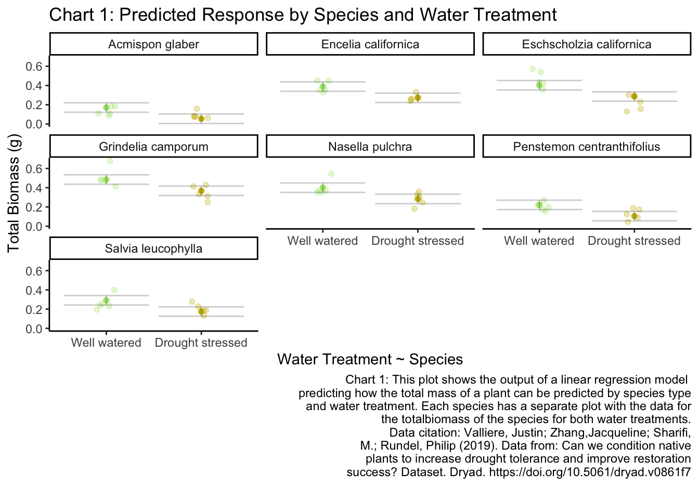
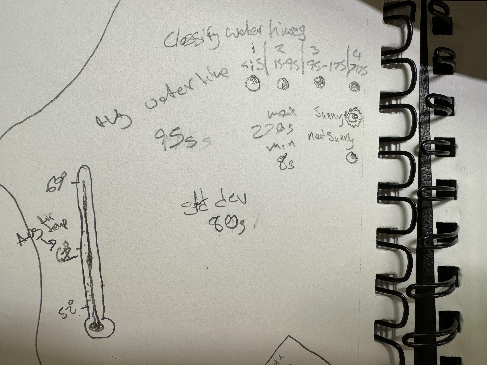

#load in packages
library(tidyverse)
library(readxl)
library(here)
library(janitor)
library(ggplot2)
#visualize pairs
library(GGally)
#selecting models
library(MuMIn)
#model predictions
library(ggeffects)
#model tables
library(gtsummary)
library(flextable)
library(modelsummary)
library(tibble) # for adding rows manually
drought_exp <- read_xlsx(path = here("data",
"Valliere_etal_EcoApps_Data.xlsx"),
sheet = "First Harvest")Homework 3
Github Repo:
https://github.com/dtfrees/freebairnsmith-dylan_homework-03.git
Clean the data
# cleaning
drought_exp_clean <- drought_exp %>%
clean_names() %>% # nicer column names
mutate(species_name = case_when( # adding column with species scientific names
species == "ENCCAL" ~ "Encelia californica", # bush sunflower
species == "ESCCAL" ~ "Eschscholzia californica", # California poppy
species == "PENCEN" ~ "Penstemon centranthifolius", # Scarlet bugler
species == "GRICAM" ~ "Grindelia camporum", # great valley gumweed
species == "SALLEU" ~ "Salvia leucophylla", # Purple sage
species == "STIPUL" ~ "Nasella pulchra", # Purple needlegrass
species == "LOTSCO" ~ "Acmispon glaber" # deerweed
)) %>%
relocate(species_name, .after = species) %>% # moving species_name column after species
mutate(water_treatment = case_when( # adding column with full treatment names
water == "WW" ~ "Well watered",
water == "DS" ~ "Drought stressed"
)) %>%
relocate(water_treatment, .after = water) # moving water_treatment column after waterRun Models
model0: Null model
model0 <- lm(total_g ~ 1, # formula
data = drought_exp_clean) # data framemodel1: Total biomass as a function of SLA, water treatment, and species
# saturated model
model1 <- lm(total_g ~ sla + water_treatment + species_name,
data = drought_exp_clean)model2: Total biomass as a function of SLA and water treatment
model2 <- lm(total_g ~ sla + water_treatment,
data = drought_exp_clean)model3: Total biomass as a function of SLA and species
model3 <- lm(total_g ~ sla + species_name,
data = drought_exp_clean)model4: Total biomass as a function of water treatment and species
model4 <- lm(total_g ~ water_treatment + species_name,
data = drought_exp_clean)Model selection
model.sel(model0,
model1,
model2,
model3,
model4)Problem 1
a. Table
# Create a manual tibble to add the AIC delta to the table
rows <- tribble(
~term, ~null, ~"model 1", ~"model 2", ~"model 3", ~"model 4",
'AIC ∆', '81.22','2.44', '60.37','32.12', '0.00'
)
attr(rows, 'position') <- c(20) # put the new row in the 20th row of the table
# Comparing models
modelsummary <- modelsummary::modelsummary( # this function takes a list of models
list(
"Null" = model0, # "model name" = model object
"Model 1" = model1,
"Model 2" = model2,
"Model 3" = model3,
"Model 4" = model4
),
add_rows = rows, # add the manually made tibble to the table
gof_map = c("r.squared", "aic"), # only include the r squared and aic in the goodness of fit stats
title = "Table 1: Linear Regression of Effect of SLA, Water Treatment, and Various Plant Species on Total Biomass", # add a title
statistic = c("p = {p.value}"), # make only p-value statistics added to the table
output = "flextable", # make the output table a flextable so it can be edited as one
stars = TRUE # add stars to statistically significant values
)
# Customize the flextable
modelsummary <- modelsummary %>%
autofit() %>% # make the spacing of the columns reasonable
border_inner_v() %>% # make vertical lines in between the cells
border_inner_h() %>% # make horizontal lines in between the cells
bg(i = c(1,3,5,7,9,11,13,15,17,19:21), bg = "grey") %>% # make the background of certain rows grey
bold(part = "header") %>% # make the headers of the columns bold
set_caption(caption = "Table 1: Linear Model of Effect of SLA, Water Treatment, and Various Plant Species on Total Biomass")Table 1: The columns are defined by the different and each row shows a differnet predictor variable estimate and the p-value (\(\alpha = 0.05\)) below it. The Null model has none of the predictor values. The saturated model with all predictor variables is Model 1 (F(8, 61) = 23.44, p-val < 0.001, \(\alpha = 0.05\), \(R^2 = 0.7545\)). Model 2 (F(2, 67) = 14.57, p-val < 0.001, \(\alpha = 0.05\), \(R^2 = 0.3031\)), Model 3 (F(7, 62) = 13.85, p-val < 0.001, \(\alpha = 0.05\), \(R^2 = 0.61\)), and Model 4 (F(7, 62) = 27.08, p-val < 0.001, \(\alpha = 0.05\), \(R^2 = 0.7535\)) each have some other combination of Specific Leaf Area (sla), Water-treatment, and Species Type.
Table 1: Linear Regression of Effect of SLA, Water Treatment, and Various Plant Species on Total Biomass
| Null | Model 1 | Model 2 | Model 3 | Model 4 |
|---|---|---|---|---|---|
(Intercept) | 0.279*** | 0.080 | 0.047 | -0.033 | 0.055* |
p = <0.001 | p = 0.162 | p = 0.394 | p = 0.620 | p = 0.030 | |
sla | 0.000 | 0.001** | 0.001* | ||
p = 0.619 | p = 0.001 | p = 0.018 | |||
water_treatmentWell watered | 0.122*** | 0.090** | 0.117*** | ||
p = <0.001 | p = 0.003 | p = <0.001 | |||
species_nameEncelia californica | 0.238*** | 0.115+ | 0.218*** | ||
p = <0.001 | p = 0.056 | p = <0.001 | |||
species_nameEschscholzia californica | 0.234*** | 0.222*** | 0.232*** | ||
p = <0.001 | p = <0.001 | p = <0.001 | |||
species_nameGrindelia camporum | 0.330*** | 0.226*** | 0.313*** | ||
p = <0.001 | p = <0.001 | p = <0.001 | |||
species_nameNasella pulchra | 0.241*** | 0.168*** | 0.229*** | ||
p = <0.001 | p = <0.001 | p = <0.001 | |||
species_namePenstemon centranthifolius | 0.061 | -0.006 | 0.050 | ||
p = 0.125 | p = 0.896 | p = 0.128 | |||
species_nameSalvia leucophylla | 0.117*** | 0.139** | 0.120*** | ||
p = <0.001 | p = 0.001 | p = <0.001 | |||
R2 | 0.000 | 0.755 | 0.303 | 0.610 | 0.754 |
AIC ∆ | 81.22 | 2.44 | 60.37 | 32.12 | 0.00 |
AIC | -75.2 | -157.5 | -96.4 | -127.1 | -159.2 |
+ p < 0.1, * p < 0.05, ** p < 0.01, *** p < 0.001 | |||||
b. Write a 5-6 sentence “statistical methods” section.
To analyze the influence of Specific Leaf Area (SLA), Species Type, and water treatment on total biomass of plant roots and shoots. We used five different linear regression models. These included a null model with no predictors (model 0)(, a saturated model with all three predictors (model 1),a model with SLA and water treatment (model 2), a model with SLA and Species Type (model 3), and a model with water treatment and Species Type (model 4). To choose the final model that best predicts the total biomass and is the least complex, we used the Akaike Information Criterion (AIC). Model 4 (water treatment and Species Type) had the lowest AIC (-159.2) and was therefore the best model to use. I then plotted and analyzed the diagnostics of Model 4, where I visually assessed that the residuals were homoscedastic, normally distributed and outliers were not an issue.
c. Visualization
Model predictions
model_preds <- ggpredict(model4,
terms = c(
"water_treatment",
"species_name"))
# use View(model_preds) to see the predictions as a data frame
# use model_preds to see the predictions formatted nicely
View(model_preds)Visualization code
# creating new data frame of model predictions for plotting
model_preds_for_plotting <- model_preds %>%
rename(# renaming columns to make this easier to use
water_treatment = x,
species_name = group)
# use View(model_preds_for_plotting)
# to compare this to the original model_preds data frame
ggplot() +
# underlying data
geom_jitter(data = drought_exp_clean, # use original clean data for underlying points
aes(x = water_treatment, # water treatment on the x axis
y = total_g, #total biomass on the y axis
color = water_treatment), # color the points by water treatment
alpha = 0.3, # make underlying data transparent
width = 0.1, # make the underlying data jittered horizontally
height = 0) + # make the underlying data have no vertical jitter
# show points in underlying data
geom_point(data = model_preds_for_plotting, # use the model predictions
aes(x = water_treatment,
y = predicted, # predicted total_g on the y axis
color = water_treatment)) +
# model prediction 95% CI errorbar
geom_errorbar(data = model_preds_for_plotting,
aes(x = water_treatment,
y = predicted,
ymin = conf.low, #use the confidence interval in the model_preds df
ymax = conf.high),
alpha = 0.2) + # decrease opacity
# cleaner theme
theme_classic() +
# no legend
theme(legend.position = "none") +
# creating different panels for each species
facet_wrap(~ species_name) +
# change colors
scale_color_manual(values = c("Well watered" = "#afe67c",
"Drought stressed" = "#cab90df0")) +
# labels
labs(title = "Chart 1: Predicted Response by Species and Water Treatment", # titles
x = "Water Treatment ~ Species",
y = "Total Biomass (g)",
caption = "Chart 1: This plot shows the output of a linear regression model
predicting how the total mass of a plant can be predicted by species type
and water treatment. Each species has a separate plot with the data for
the totalbiomass of the species for both water treatments.
Data citation: Valliere, Justin; Zhang,Jacqueline; Sharifi,
M.; Rundel, Philip (2019). Data from: Can we condition native
plants to increase drought tolerance and improve restoration
success? Dataset. Dryad. https://doi.org/10.5061/dryad.v0861f7
") # caption
d.Write a caption for your visualization.
Caption in figure above.
Chart 1: Predicted Response by Species and Water Treatment: This plot shows the output of a linear regression model predicting how the total mass of a plant can be predicted by species type and water treatment. Each species has a separate plot with the data for the total biomass of the species for both water treatments.
Data citation: Valliere, Justin; Zhang,Jacqueline; Sharifi, M.; Rundel, Philip (2019). Data from: Can we condition native plants to increase drought tolerance and improve restoration success? Dataset. Dryad. https://doi.org/10.5061/dryad.v0861f7
e. Write a 3-4 sentence results section.
Model 4 with predictors Species type and water treatment had the best prediction of the total biomass. (F(7, 62) = 27.08, p-val < 0.001, \(\alpha = 0.05\), \(R^2 = 0.7535\)) (AIC = -159.2). On average, the total biomass of Well watered plants were 0.117 ± 0.017g heavier than drought treated plants (p < 0.001). On average, the total biomass across species was 0.279 ± 0.025g heavier than drought-treated Acmispon glaber plants (all p < 0.001 except for Penstemon centranthifolius).
Problem 2
a. Describe in words what an affective visualization could look like for your personal data
I have a number of different predictor variables that I was looking at to see if they influenced my plunge time. I think I want to look at how the air temp and weather type affected my plunge time. I am thinking of doing a thermometer with temps labelled on one side and then symbols representing different time spent plunging classifications and then something to add to those symbols to represent weather type. These symbols will stack horizontally to from left to right.
b. Inital Affective Data Viz

c. Draft Affective Data Viz

d. Artist statement.
In this piece, I am showing how my time spent cold plunging varies over different air temps and weather types. Each circle represents one cold plunge and hwo filled in it is represents the amount of time spent in the water during that cold plunge. I drew a lot of inspiration from Stefanie Posavec and Giorgia Lupi’s Dear Data project. This is just an initial pencil skecth but I will put colors into this sketch to make the piece more attractive. I spent a lot of time brain storming which variables to use and how to use them.
Problem 3
b. Visual Clarity
I think the authors did a good job representing their One-Way ANOVA statistics clearly relative to the complexity of their analyses. The x and y axis are in a logical position; however I think they could have had less intervals on the y-axis because it is not very clear on the units of density and I think what matters much more is to show if the density are relatively higher or lower. They did not do a great job showing underlying data or summary statistics. The bar-and-whisker plot leaves out any underlying data and does not show the low end of the SE or CI whisker (it did not specify what the whisker represented).
c. Aesthetic clarity
I think that the authors had a balanced data:ink ratio; none of the ink was pointless. The only extraneous info that I would have taken out would have been to thin the intervals on the y-axis. There are the borders around the plots and the filled in bars which are extra ink, but I think that they are useful in differentiating the space and showing which statistics were significant and which one weren’t. To lessen the amount of ink on the page they could possibly use hatching instead of a complete fill on the bars.
d. Recommendations
My first recommendation would be to create fewer intervals on the y-axis because I don’t think the main message of the figure is enhanced at all by more specificity of the density of the urchins. My second recommendation would be to add the underlying data of the different urchin densities across sites and sizes. I would do this by adding a jitter plot of these points faceted and grouped in the same way the bars are. I would also keep the current coloring by having the small urchin data points a different color than the other ones, but put the coloring on on the jittered points. If they did not want jittered points I would recommend to hatch the bars instead of filling them to help the data:ink ratio. Finally, I would also add a mean point and 95% Confidence Interval error bar in place of the bar-and-whisker, this would show the underlying data and the low end of the CI.